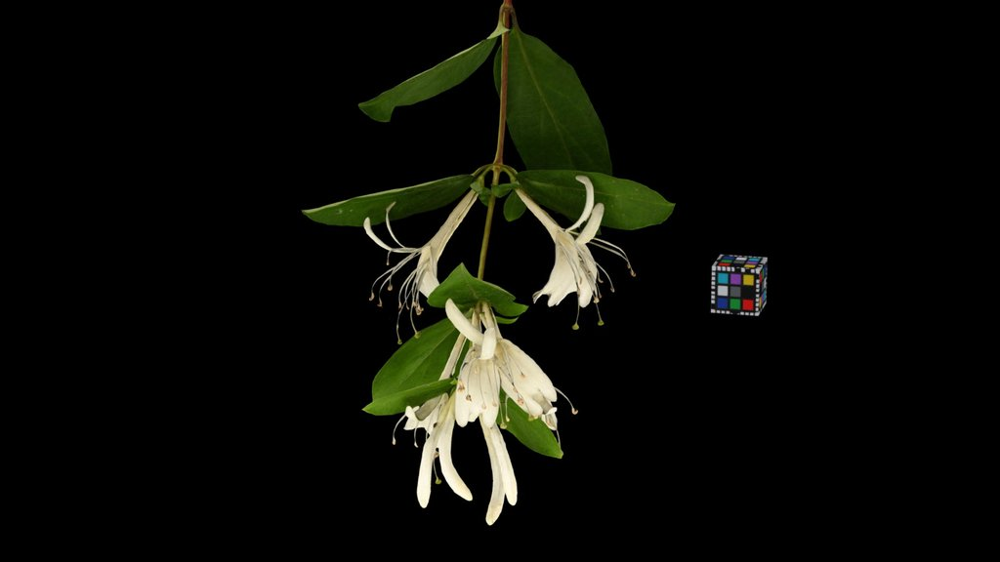

Little Nature / モデル
スイカズラ
小さな自然で閲覧できる、CC0ベースの3D生物モデル資料です。対応するiPhoneとiPadでは、ダウンロードしたモデルをARで表示できます。

- カテゴリー
- 植物
- 学名
- Lonicera japonica
- ファイルサイズ
- 22.4 MB
- ジオメトリ
- 620,640 面 · 402,056 頂点
- アニメーション
- なし
分類
Plantae 植物界
Angiospermae / Magnoliophyta 被子植物門
campanulids キキョウ類
Dipsacales マツムシソウ目
Caprifoliaceae スイカズラ科
Lonicera スイカズラ属
Lonicera japonica スイカズラ ニンドウ
種とモデルのメモ
スイカズラは小さな自然で植物モデルとして整理されています。ローカライズ名、利用可能な学名、分類情報、CC0ベースの3Dソースを結び付けた資料です。
主な分類情報: なし。
USDZデータは620,640面、402,056頂点で構成され、アプリ内で必要に応じてダウンロードして閲覧できます。